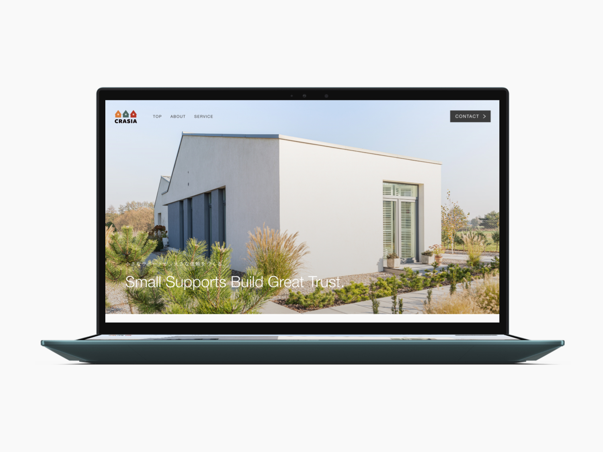
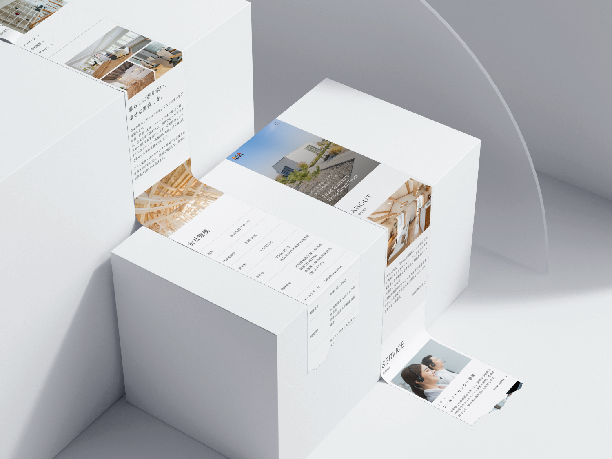
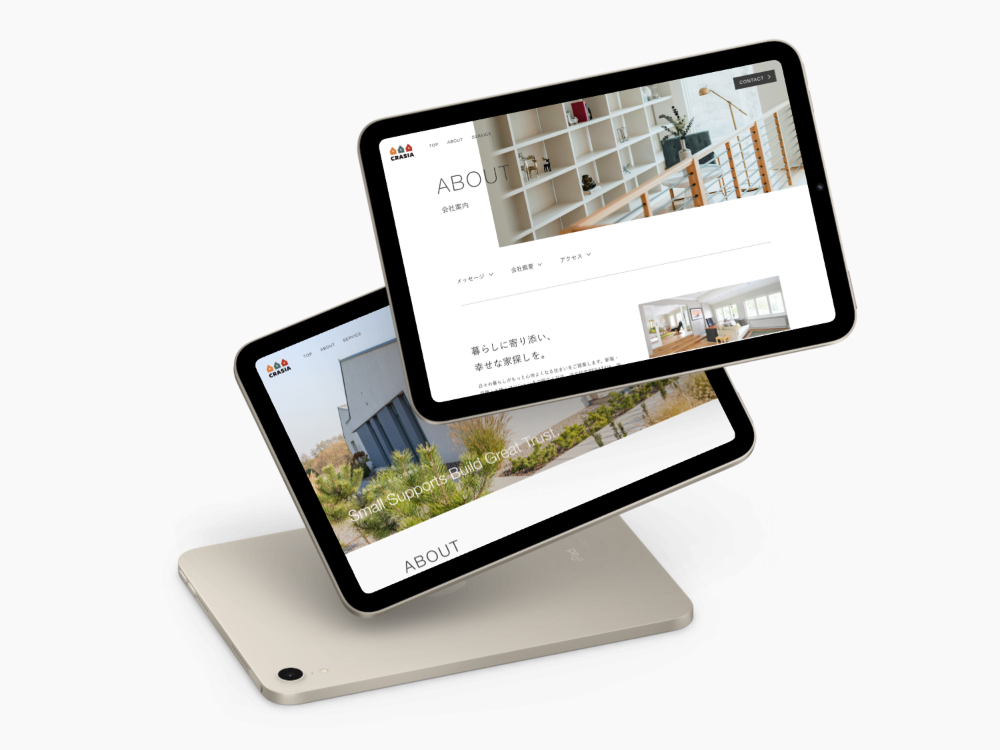
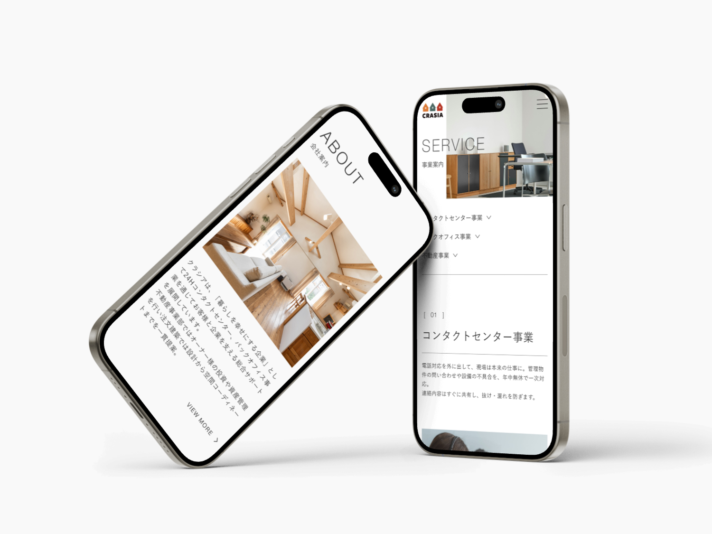
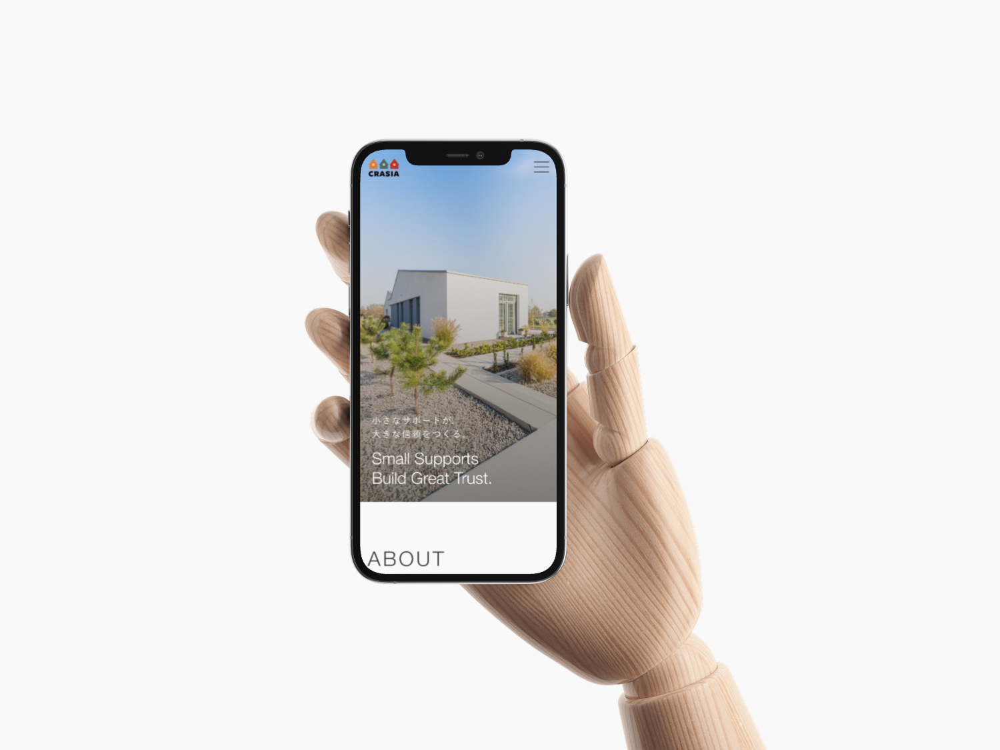

株式会社クラシア
コーポレートサイト
制作概要
24時間コンタクトセンターやバックオフィス事業を展開する「株式会社クラシア」のコーポレートサイトデザイン。
"小さなサポートが、大きな信頼をつくる。"というコンセプトのもと、暮らしに寄り添う企業姿勢を、温かみのあるビジュアルとクリーンなレイアウトで表現しました。

- 課題
-
- ・企業の事業内容（コンタクトセンター・バックオフィス支援）が一般に伝わりにくい
- ・"暮らしを支える"という企業理念を視覚的に表現する必要があった
- ・信頼感と親しみやすさの両立が求められた
- ターゲット
-
- ・BPO・コールセンター業務の委託を検討する企業担当者
- ・クラシアのサービスに関心を持つ取引先候補
- ・企業の理念や働き方に共感する求職者
- 目的
-
- ・「暮らしを幸せにする企業」としてのブランドイメージを構築する
- ・サービス内容をわかりやすく伝え、問い合わせにつなげる導線を設計する
- ・安心感のあるデザインで、初めて訪れた人にも信頼を感じてもらう
- デザイン
-
- ビジュアルコンセプト：広い芝生と温かみのある建物を中心に据え、"暮らしに寄り添う"企業像を視覚的に伝達。自然光と開放感のある写真を活かしたクリーンなデザイン。
- カラー：ホワイトをベースに、ナチュラルなアースカラーを差し色として使用。落ち着きと信頼感のある配色設計。
- レイアウト：フルワイドのメインビジュアルでインパクトを出しつつ、本文エリアでは余白を十分にとり、読みやすさを重視した構成。
- 情報設計
-
ファーストビューでは"小さなサポートが、大きな信頼をつくる。"のメッセージで企業姿勢を明快に伝え、サービス紹介→企業理念→お問い合わせと、訪問者が自然にアクションできる導線を構築。
BtoB向けサイトとして、情報の信頼性と視認性を意識し、シンプルなナビゲーションと明確なCTAボタンを配置しました。 - 担当範囲・ツール
-
- 担当：デザインのみ
- 使用ツール：Figma / Illustrator


学び
BtoB向けコーポレートサイトのデザインを通じて、「誰に伝えるか」を起点にした情報整理と、ビジュアル表現のバランス感覚が鍛えられた。 "見た目の美しさ"だけでなく、訪問者が安心して問い合わせまで進める導線設計──CTA配置やセクション構成──を実務で経験できたことは大きかった。 写真の選定やトリミングひとつで印象が大きく変わることも実感し、素材を活かすデザイン力の重要性を学んだ。

プレビュー